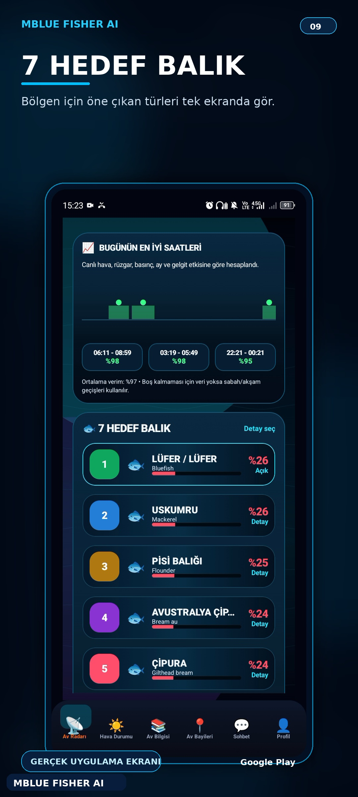

Öne Çıkan Proje
MBlueFisherAI
Balıkçılık kararlarını desteklemek için hava, avlak, hedef tür ve saha verilerini bir araya getiren çok dilli Android uygulaması.
AndroidTR / ENSpot AnalysisSpecies DataWeather Context
← Projelere Dön

Ürün Deneyimi
Mobil kullanım için tasarlanan veri odaklı ekranlar.
Kullanıcıya ham veriyi göstermek yerine, av kararı verirken hızlı okunabilecek bir deneyim sunmayı hedefler.


